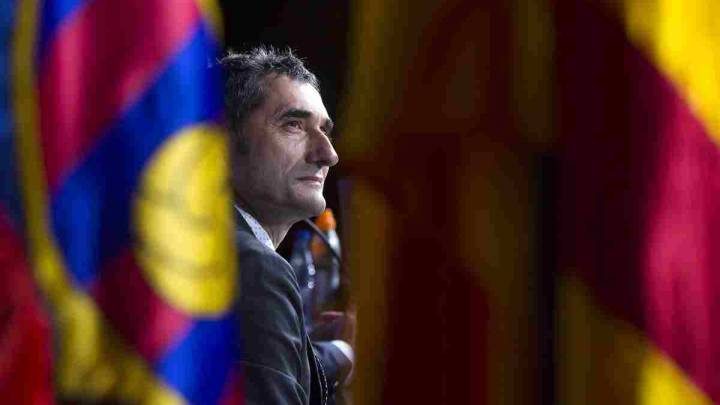
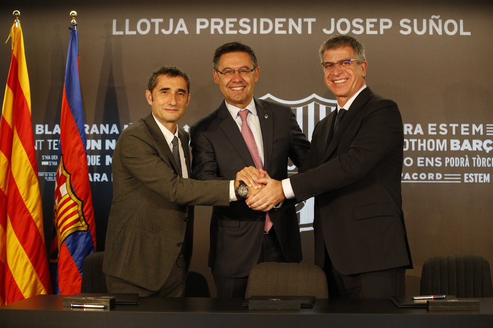
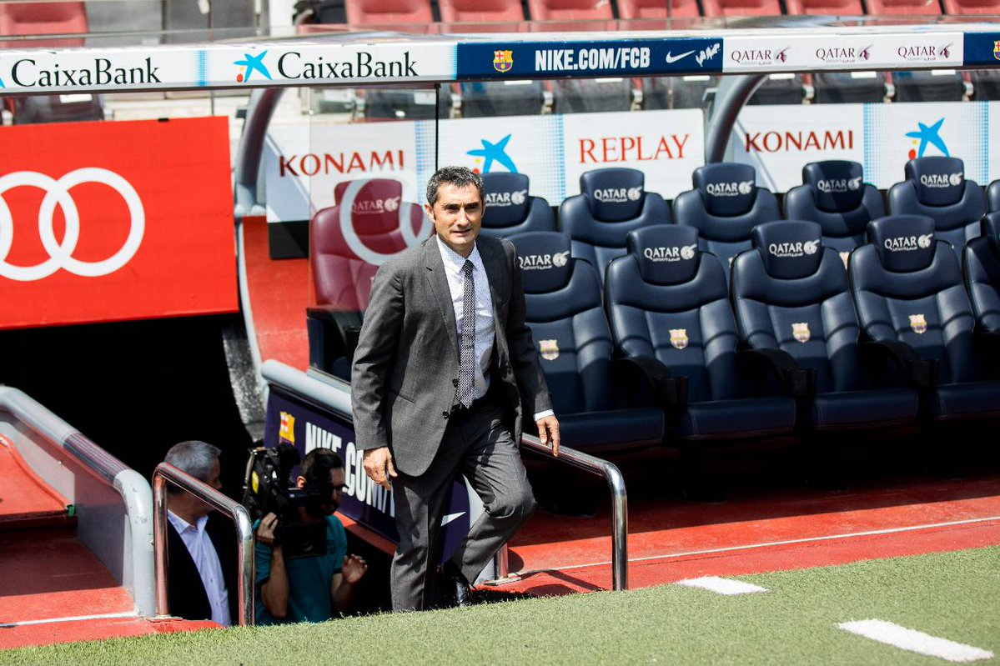

Битката за трофея на "Висенте Калдерон" е утре от 22,30 часа.
Битката за трофея на "Висенте Калдерон" е утре от 22,30 часа.
футбол

Валверде: Идеята ми е да се обърна още повече към стила на Барса
Новият старши треньор на Барселона Ернесто Валверде официално подписа договор за 2+1 години с каталунския клуб. 53-годишният специалист не скри вълнението си от новото предизвикателство. "Благодарен съм за доверието в мен. За мен е огромна привилегия. Зная, че с това идва и голяма отговорност. Тук съм заедно с работата си, с идеите си, с които започвам този нов проект", заяви наставникът след подписването на контракта. "Идвам от много специален клуб (Атлетик Билбао). Тук (в Барселона) искам да пренеса всичките си идеи. Моите предшественици в Барселона свършиха много работа и спечелиха много трофеи. Нямам никакви съмнения в правото на философията на Кройф", довери той.  "Зная добре, че предишните треньори са работили тук с идеята да запазят стила на Барса. Аз добре зная какво представлява в Барселона, работил съм тук. Сега трябва отново да се адаптирам. Идеята ми е да се обърна още повече към стила на Барса", сподели новият треньор. След първоначалното си изказване Валверде даде и първата си пресконференция като треньор на "лос кулес". "Трябва да се приспособя към играта и стила на отбора, защото с тях тимът постигна много успехи. С каква система ще играя? Мисля, че отборът се справя добре и в 4-3-3, и в 3-4-3. Всичко е динамика, важното е да контролираме играта. Луис Енрике не се отдалечи от стила, Барса беше разпознаваем отбор", призна той.  "За мен ще е страхотно преживяване да ръководя Меси, той най-добрият футболист в света. Меси сякаш е стигнал върха си, но винаги може да ни изненада. Надявам се да успея да му помогна. Аз лично ще се наслаждавам на работата с него. Той може да бъде решаваща фигура без значение от позицията си на терена", каза специалистът от Екстремадура. Запитан за изтичащия договор на Лео, Ернесто заяви: "Всички са настроени положителни, че той ще остане, аз също". "Иниеста е много важен за отбора и за клуба. Сержи Роберто може да играе и като бек, и в центъра на терена. Алейш Видал също е част от отбора", довери наставникът на "синьо-червените". "Трябва да анализираме добре всичко. Играта на Барса винаги е била въз основа на колектива. Важно е тимът да играе балансирано. Нужно е да намерим точната форма, за да играем комфортно. (…) Да, тимът не спечели титлата тази година, но взе Купата на краля и Суперкупата на Испания. Луис Енрике нареди куп трофеи в последните години", призна Валверде.  Запитан дали трябва да се дава почивка на триото Меси, Луис Суарес и Неймар, за да бъдат свежи в края на сезона, той отговори: "Трябва да преценим нещата. Наистина е важно в края на сезона да имаме шанс за всички трофеи, но и да сме в добра форма. Най-важното е в края да се борим на всички фронтове". Това лято предстоят три издания на Ел Класико - два мача за Суперкупата на Испания и една контрола с Реал Мадрид. "Важно е да започнем силно. Суперкупата ни предлага възможност да започнем сезона с трофей", каза той. Валверде обърна внимание и на детско-юношеската школа: "Бих искал да имам силна връзка с школата. Там са момчетата, които могат да се изкачат в първия тим. Ще е по-хубаво дублиращият отбор да се изкачи в Сегунда. За мен е важно да знам за момчетата, които се развиват добре".
футбол

Иниеста: Валверде има качества да води Барса
Капитанът на Барселона Андрес Иниеста коментира назначението на Ернесто Валверде за старши треньор на каталунския тим. "Валверде има качества да води Барса. Ако нямаше, нямаше да бъде избран", довери 33-годишният халф по време на събитие Save the Children. "През новия сезон ще се завърнем с нови сили и надежди. Убеден съм, че той ще бъде успешен за нас, ако правим нещата по правилния начин. Тук трябва да играеш добре и да печелиш трофеи", сподели номер 8 на "лос кулес". "Чувствам се силен, позитивен и мотивиран, за да продължа да играя на високо ниво в следващите няколко години. Желанието ми е да остана в Барса. Винаги съм искал това, още от момента, в който пристигнах тук на 12-годишна възраст", каза още Иниеста.
футбол
Официално: Барселона има нов старши треньор
Ръководството на Барселона взе решение кой да наследи Луис Енрике на треньорския пост на "Камп Ноу". Само часове след като отпадна възможността досегашният помощник на Лучо Хуан Карлос Унсуе да поеме кормилото на каталунците и той отпътува в посока Селта, шефовете на "лос кулес" окончателно се спряха на Ернесто Валверде, чийто договор ще бъде за срок от 2+1 години. Бившият наставник на Атлетик Билбао ще вземе в щаба си и двамата си най-доверени хора, с които работи и при баските – Йоан Аспиасу, който ще му бъде първи асистент, както и Хосе Антонио Посанко, чиято отговорност ще бъде физическата подготовка.
 Триото работи неизменно заедно от сезон 2008/2009 насам, когато изведе Олимпиакос до титлата в Гърция. 53-годишният Валверде бе основен фаворит за следващ треньор на Барселона, макар през сезона да бяха спрягани и имената на Еусебио Сакристан и Роналд Куман. Той има два сезона в Барса от годините си на професионален футболист и между 1988 и 1990 година печели Купата на краля и КНК. Като треньор пък е водил градския съперник Еспаньол, както и Виляреал, Валенсия, Олимпиакос, Атлетик Билбао и Билбао Атлетик – втория тим на "лъвовете" от Биская. Официалното представяне на Ернесто Валверде ще се състои в четвъртък.
Триото работи неизменно заедно от сезон 2008/2009 насам, когато изведе Олимпиакос до титлата в Гърция. 53-годишният Валверде бе основен фаворит за следващ треньор на Барселона, макар през сезона да бяха спрягани и имената на Еусебио Сакристан и Роналд Куман. Той има два сезона в Барса от годините си на професионален футболист и между 1988 и 1990 година печели Купата на краля и КНК. Като треньор пък е водил градския съперник Еспаньол, както и Виляреал, Валенсия, Олимпиакос, Атлетик Билбао и Билбао Атлетик – втория тим на "лъвовете" от Биская. Официалното представяне на Ернесто Валверде ще се състои в четвъртък.